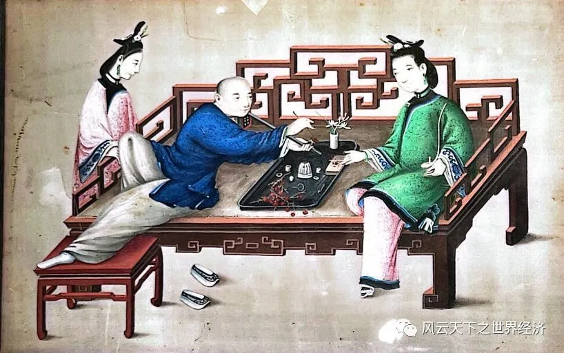

Part1楔子
伍秉鉴，清乾隆三十四年生人，字成之，号平湖。乾隆四十八年，父伍国莹在广州怡和街创办怡和行。嘉庆六年，秉鉴接怡和行务，善经营，不几年为广州巨富。为 “过去1000年最富有的人。
广州市的十三行旧址，如今是商业街，主营服装批发。繁华有余，不过看上去与一般街道无异，不复曾经“垄断交易”的煊赫。我并不经常去那里。
后得知伍秉鉴先生生于斯，成于斯，又衰于斯，循着寻访一段历史的因由，我踏足这片土地，翻阅了关于这段历史，关于这片土地的人和事的一些资料。
Part2奠基
《粤海关志》：“国朝设关之初，番舶入市者仅二十余柁，至则劳以牛酒，令牙行主之，沿明之习，命曰十三行。”
十三行是一个地名，十三行是一片商馆区，十三行是一个商人群体，十三行是一种贸易体制。
广州这个中国海上丝绸之路的重要港口，自有千年商都的友善、务实和包容，道是“迎八方来客，聚四海之财”。秦汉时期出发的商船抵达东南亚一带；唐代成为中国第一大港；宋元时期对外贸易蓬勃发展，朝廷设立市舶司，海山楼（今北京南路附近）为接待外商的场所；明代改海山楼为市舶提举司署，并在西关建怀远驿（今十八甫路），供前来朝贡的贡使和随从居住。
清顺治十三年（1656）颁布禁海令，广东海上贸易禁而不绝。康熙二十三年（1684）取消海禁，设立粤海关（今海珠广场西侧），拉开了十三行辉煌历史的序幕……
上承天子恩泽，下据地缘优势，当时的广州是 “开眼看世界的唯一窗口”，是创富者的天堂。世俗排序下的“士农工商”，也为伍秉鉴先生父亲等人不齿：
“读书未必经世致用，买卖却可日进斗金。”
伍父由此辍学，进入同文堂当一名伙计。十数年间，他积攒经验、丰富阅历，并凭借着机智迅敏、可靠负责累积了广泛人脉。
十三行的“忽忽数十载，花开永不败”唤醒伍父蛰伏已久的雄心，他在东印度公司的资助下，创办元顺行，后更名为“怡和行”。发轫虽迟，却因恪守承诺，经营有方，伍父仅用三年时间跻身头部行商之列。
其父蛰伏期间，伍秉鉴先生降生。“秉鉴”，取秉承、借鉴之意。又因伍氏商名为“浩官”，“伍浩官”之名也伴随了伍秉鉴先生的一生。
Part3崛起，繁荣，富甲天下
乾隆二十二年“一口通商”。十三行垄断对外贸易，贸易额持续攀升——从乾隆二十三年，到港洋船不到三十艘、税银仅五十余万两，到鸦片战争前夕，到港洋船达二百艘、税银提高将近四倍，财势滚滚涌入大清。
十三行是清帝国承认的唯一对外贸易机构：外国商船抵达广州，首先需要联系某一商行；若通过散商贸易，则须由行商抽取手续费。此外，行商在贸易中占绝对优势，洋商几乎没有讨价还价的余地。
因此，虽有诸般约束和限制，广州十三行因坐拥巨额海外贸易而占据中间商的垄断地位，财富沉淀累积，得以在广州这片土地上大放异彩，为世人瞩目：
自是繁华地不同，鱼鳞万户海城中。人家尽蓄珊瑚鸟，高挂栏杆碧玉笼。奇珍大半出西洋，番舶归时亦置装。新出牛郎印光锻，花边钱满十三行。
伍秉鉴先生在这时登上了历史的舞台。
辗转至1800年，父兄相继去世，伍秉鉴先生成为怡和行的新掌门人。
前有长辈坐镇，伍秉鉴先生并无太多施展空间，如一只蛰伏的蛹。时人对他不甚看好，乃至断言怡和行会在其手上没落。
然，伍秉鉴先生兼有其父的低调内敛，沉稳谦和，以及更为精准的商业眼光。伍秉鉴先生长袖善舞，在官府、行商、洋商间左右逢源。怡和行在他的经营下风生水起，贸易额至1807年仅次于同文行。
1813年，伍秉鉴先生走马上任总商之位。
1834年，他创造的财富多达1872万两，当时清政府年财政收入不过4000万两。“天下第一大富翁”实至名归。
Part4浩官其人
伍秉鉴先生，是一个略显瘦削且成熟的男性，在他身上弥漫着长期从商的锐利和拔俗的儒雅气质。任何地方，你都能看出他有别于他人的风度。
伍氏的发家史离不开“智信仁勇”，这在伍秉鉴先生身上有所体现。
伍秉鉴先生是一个机敏变通的人。既快又准的心算能力为他人所称道。
自立门户前的一日下午，伍国莹身体微恙，留伍秉鉴先生“坐镇” 同文行。
百无聊赖之际，潘振承忽然走进来，见伍国莹不在，将手里一张纸递到伍秉鉴先生面前：“这是上个月茶叶的利润，你算算有多少。”
伍秉鉴先生接过，查看，顷刻报数。
潘振承不信，亲操算盘，噼噼啪啪，一番拨弄，发现与伍秉鉴先生所报数目分毫不差，大感惊诧。
伍秉鉴先生的心算能力强如斯，数十年后，亦令英国东印度公司目瞪口呆。
伍秉鉴先生是一个以诚律己的人。与他接触过的人都十分信赖他。
17世纪初的中国茶叶在欧洲媲美宝石，茶商生意为大宗。
怡和行主营茶叶生意。为确保货源稳定，伍秉鉴先生从名单相对固定的茶农手中收茶。这些茶农们了解伍秉鉴先生对于茶叶的超严格要求，也会提供质量更好的毛茶，因为一旦掺有烂茶、死茶、折蒂茶，伍秉鉴先生就会拒绝收购。
一次，英国商人米尔顿想增订两百箱伍氏茶叶，不料被伍秉鉴先生以“已无余茶”为由拒绝了。其他行商表示费解——他们以为，怡和行直接放弃了一笔利润可观的生意，毕竟伍秉鉴先生完全可以从其他茶农手中进货，再销售。
“从不熟识的茶农手里进货无法确保茶叶的质量，怡和行不会在这方面冒险，宁可少赚一些，也不会为增加订货量，使茶叶品质受到影响，进而影响怡和行的声誉。”伍秉鉴先生解释。
伍秉鉴先生做生意不仅要对得起顾客的信赖，还要对得起自家的招牌。

茶商示意图 摄于广州十三行博物馆
伍秉鉴先生是一个乐善好施的人。
1834年，怡和行迎来一位客人彼得·伯驾——毕业于耶鲁大学的一名眼科医生。伍秉鉴先生亲自接待。
“唔。”一贯接待商人的伍秉鉴先生若有所思，“不知伯驾先生所为何事？”
“我想在广州创办一家眼科医院，但我没有资金，我希望你能资助我。”伯驾诚恳地说。
“您需要多少钱？”伍秉鉴先生问。
“大约十万银元。”
“我可以资助您，但我有一个条件：您创办的这家医院要免费给老百姓看病。”
伯驾不曾想面前的富商如此痛快，在怔愣间同意。
1835年11月4日，一家名为“新豆栏医局”的眼科医院挂牌营业。
为让病人循序就医，伯驾发明了用竹片制成的号牌，病人可根据号牌上的数字循序进入诊疗室——据传，这便是最早的“挂号制度”。
伯驾在中国待了二十多年，共为五万三千多人诊疗过。上至衙门官员，下至街头乞丐，他的医术得到全广州的认可，甚至逐渐拓展了问诊领域，成为一名全科医生。
1857年，新豆栏医局由美国传教士嘉约翰接手，更名为“博济医院”。
孙中山先生曾在此习医。后更名为中山医学院第二附属医院，又更名为中山医科大学孙逸仙纪念医院，如今是中山大学附属第二医院。
伍秉鉴先生是一个开眼“赚”世界的人。他被别人称为“胆商”。
《南海县续志》中记载，伍秉鉴“多财善贾，总中外贸迁事，手握资利机枢者数十年”。在诸多商行走向破产、倒闭、没落时，伍家逆势而荣。
他投资之勇，不仅在物，还在人。
“我还记得我们初次见面的情景：我什么都不懂，除了梦想，一无所有，我不明白你当时为什么会希望我留在中国，还一直对我这么好？”福布斯说。
伍秉鉴脑海中浮现那天的场景：十六岁的福布斯扛着一箱箱货物，步伐沉稳，眼神热情——谁也不会想到这是以后美国的“铁路大王”。
但是，“看到你的第一眼，我就知道你不会做一辈子水手。”
……
美国获得独立后，很多对中国商品向往已久的美商们纷纷来华开展贸易。
伍秉鉴先生很快在十三行码头注意到身材高大，骨骼匀称，总是精力充沛的福布斯——其他水手因长期随船航行的食物单调，营养不足，而略显瘦弱，体力不济时，这个年轻人十分惹眼。伍秉鉴先生主动上前攀谈。
“我自小就对东方向往，茶叶芬芳，丝绸、瓷器如此美丽……我一定要到中国来看一看。”福布斯滔滔不绝，从怀里掏出一本《马可·波罗行纪》“书里说这是一片充满神奇和财富的土地……”
“一切是否如你所想呢？”伍秉鉴先生问道。
“我看到商馆，梳着辫子的中国人，一箱箱货物……可是我没看到财富。”福布斯流露出几分失望。
“财富不是人人都能看得到的，人生中有很多东西远比财富重要，比如机遇、选择。”伍秉鉴先生望着福布斯接着说道。“你能来到这里，这就是一种机遇，若你选择留下来，我相信你一定会看到财富！”
货船开走，福布斯留下来。
伍秉鉴先生将福布斯安排在旗昌洋行，从最基本的工作做起。福布斯热情开朗，头脑聪明，不久成为旗昌洋行的肱骨。伍秉鉴先生对其越发喜欢，收为义子。
看到美国铁路业的商机，羽翼渐丰的福布斯跃跃欲试。伍秉鉴先生十分支持，拿来五十万元银票。
“所以这也是一种投资，是吗？就像我现在打算回美国去投资铁路。”福布斯与伍秉鉴先生对视，父子二人大笑起来。
Part5硝烟，衰落
鸦烟流毒，中国三千年未有之祸。

通草水彩画-吸食鸦片 摄于广州十三行博物馆
1839年3月10日，林则徐抵达广州，要求行商缴烟。
林则徐不满伍秉鉴先生上缴鸦片数量，逮捕其子，指其鼻而怒责：“本大臣不要钱，要你的脑袋。”
伍秉鉴先生斥资买断鸦片，交予林则徐。
1839年6月3日，虎门销烟。
1839年10月1日，英方对华宣战。伍秉鉴先生捐资，筑炮台，购武器，练水军。
1840年6月，鸦片战争爆发，广州港封锁，行商生意一落千丈。伍秉鉴先生病倒。
1841年1月7日，虎门之战，广州城岌岌可危。5月21日深夜，守将奕山突袭英军，英军次日反击，奕山投降，广州沦陷。伍秉鉴先生派其子伍绍荣和谈，签下《广州条约》。引发民怨。
1841年8月29日，中方签下《南京条约》，结束“一口通商”，十三行垄断时代，就此终结。
1843年9月，伍秉鉴先生溘然长逝。
Part6跋
历史造就十三行，十三行创造历史。
十三行对中国乃至世界有深远影响。在许多国家的博物馆、艺术馆、档案馆和图书馆内，珍藏着大量有关十三行的文物、档案、文献等。
1951年，在十三行遗址（今广州文化公园）举办的“华南土特产展览交流大会”为“中国进出口商品交易会”（广交会）的先声。如今的十三行路仍是一条热闹的商业街。
历史造就伍秉鉴先生，伍秉鉴先生创造历史。
关于伍秉鉴先生的事例记载并不多，功过臧否，莫衷一是。更多的是遗忘，这么一位曾名动天下的首富，终泯于历史长河。
然，伍秉鉴先生身上广州人诚信务实、开拓包容、敢为人先的精神永远传续。
他是伍秉鉴先生，外商称他为伍浩官。